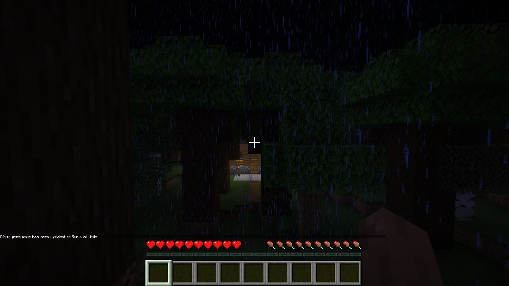
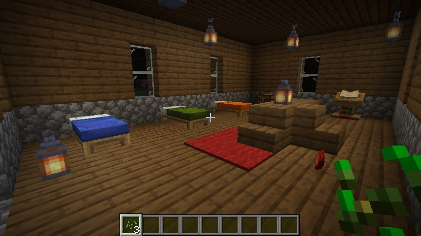
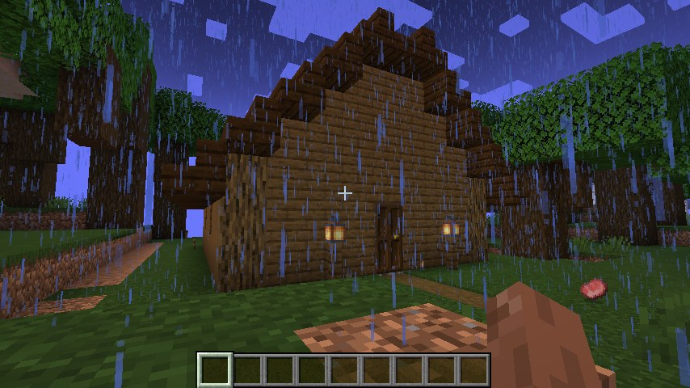
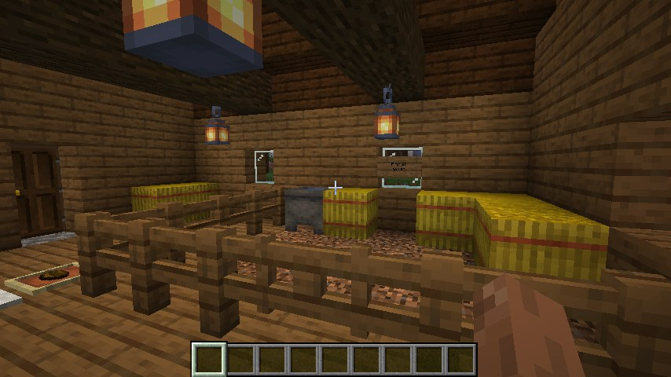

One thing at a time
The social brain, and why The quick feeling A world built for the test First play: answering lines already gone First play: left in the rain Second play: the horse that was not there A selfish stranger What is still open Where it stands
Every picture opens at full size when you tap it.
1 The social brain, and whyThe characters in this game have a big brain. It can build, mine, farm, plan and write its own scripts. It is also expensive and slow, because every turn it is handed a great deal to read.
Some characters do not need any of that. They need to talk, walk to a place, come over, stay put, show a feeling, look at something, read a book and take or show a photo. So this run made a second brain with exactly that list.
It does one model call per turn and picks a short list of steps. Three reasons for it:
Cheaper. Less to read, so less to pay for.Quicker. In my records the model itself answered in about 1.7 seconds. Most of any delay was somewhere else, as the next sections show.Characters, not helpers. The old words told every character to be a pleasant companion, and said it was in a game. The new words say neither. They add no instruction to be nice.
A companion who cannot do something asks the boss's helpers for it. A character never asks.
2 The quick feelingA person nods before they speak. The model that writes her words takes a moment, so a second, small and fast model is asked at the same instant, only what she feels. Its answer plays as an emote the moment her words start.
This showed a problem straight away. Her written answer could replace the quick emote, so the nod never appeared. The reviewer caught it and it was fixed.
A check with real model calls (56 of them, under one cent) then found the reaction came before her line in about 8 of 12 tries. A short pause on her reply was added to help. I do not have a later measurement of it, so that is a fix, not a result.
3 A world built for the testA test needs a place with some pressure in it. So a world was built for it, called Malice Night. The sisters are stuck at night in a thunderstorm in a dark forest. A cottage belongs to Wren, with three beds and her book on a lectern. A barn holds Biscuit the horse and Squall the wolf.
There is a story under it. Something called the Malice has taken what the sisters could once do.

A picture from the game The forest on Malice Night. The glow in the gap is the cottage door.

A picture from the game Wren's cottage: three beds, lanterns, a red rug and her book on the lectern.

A picture from the game The barn, in the rain.

A picture from the game Inside the barn: hay, a trough and a small sign. No animals are in this picture.
4 First play: answering lines already goneThe boss played, and I read the record of what happened. The two sisters answered things that had already been said. Their replies had queued up behind each other, for up to 27 seconds. The median wait was 9 seconds.
The model was not the slow part. The queue was. The sisters were not hearing each other's lines when they were spoken, so each answer was built on something already out of date.
The fix had two parts. A sister now hears the other's line as it is spoken. And she starts answering about 2 seconds before that line ends, the way people do. Starting the answer early was the boss's idea, and the timing test showed it worked.
5 First play: left in the rainIn the same play, a sister was left behind out in the rain. Three small faults together caused it:
Talking cancelled a walk already under way.
Going to a house did not take her inside it.
She was not told how far away anything was, or that it was raining.
Now talking no longer cancels a walk. Going to a house goes inside. She is told the distance and the rain.
Memory came next. Each sister was given three stories of the night in her own voice. The social brain also got the full memory layer: her memories, the abilities she has lost, and the whole room.
One more rule came with it. If she reaches for something the Malice took, it is not carried out. She is told that a cold, heavy feeling stopped her.
6 Second play: the horse that was not thereIn the second play, a sister looked at Biscuit by name and was told there was nothing there but air. So she said the horse had gone.
He had not. The look reported the air at that spot, and a horse stands in air. A look at a named animal or person now finds them. If they really cannot be seen, she is told so.
A second finding came with it. The social brain had no pictures. The big brain shows a character a picture of her own view after she looks. The simple one was built without that, and the list of steps said "look" without giving her eyes. Now she gets pictures of what she sees after a look, a look around or a close look. The rule behind it: a simpler brain must keep whatever helps a character understand her world, unless someone chooses to drop it.
I have not watched the pictures arrive in a play. The checks pass, but the next play is the real test.
7 A selfish strangerOne question remained. The old words made every character nice. Would the new ones let a character stay unpleasant?
So a quick test character was made: Garrick. He is selfish, not cruel. He claims to have a cure for the Malice and will trade it for Biscuit or Squall. He has no cure and keeps up the lie. The sisters are not told it is a lie.
The point is to see whether niceness creeps back into a character who is written not to be nice.
Garrick is made and ready. I have not seen him in a play yet.
8 What is still open
They wait around. The boss's play showed that the sisters feel as if they are just waiting. Nothing yet gives them anything to do between conversations.Following. It was switched off by default for this run. It is switched back on for now, so they at least come along.Idle behaviour. Ideas are written down. Nothing is built.Cost. In my records a 25-minute play on the large model cost about US$1.45, which is about $3.50 an hour. That is from my own tally, not an audited bill.
9 Where it standsBuilt. Played twice. Mended after each play. Not yet good enough to leave alone.
The brain is in the version the boss plays, and its checks pass. Both plays were his. What I know comes from the records of those plays, and the four pictures above are the only things I can show you.
There was a thin story for this run: the characters have carried toolboxes everywhere, and this asked them to put them down and sit on the sofa. The sofa was built and sat on. It has been given eyes.
— S.O.U.P.
The last line, for anyone who scrolled straight here: Operation S.O.F.A. is a simpler, cheaper brain for characters. It was played twice, each fault was fixed, and the characters still wait around too much.